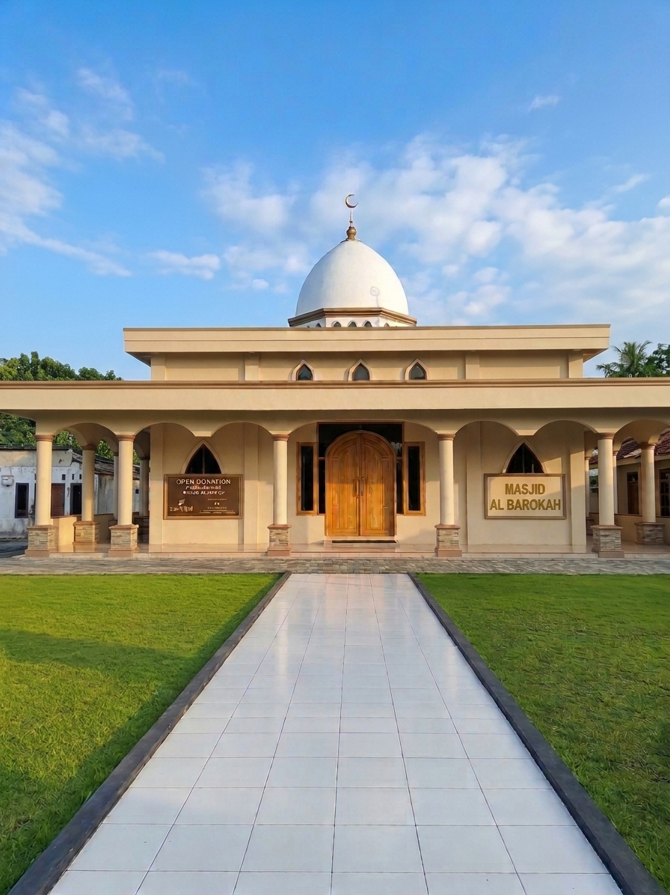

Shalat berjamaah
Waktu shalat lima waktu, kajian pagi, dan ibadah komunitas yang terorganisir secara rutin.
Masjid Al Barokah yang berlokasi di Kp. Sipak, Kecamatan Jasinga, Kabupaten Bogor, dibangun melalui semangat gotong royong masyarakat setempat serta dukungan para donatur dari luar kampung yang ikhlas menyisihkan rezekinya demi pembangunan masjid.

Masjid Al Barokah kini menjadi pusat ibadah dan diharapkan terus berkembang sebagai tempat pendidikan agama, silaturahmi, serta kegiatan sosial untuk meningkatkan kemakmuran masjid dan memberikan manfaat bagi masyarakat sekitar.
Waktu shalat lima waktu, kajian pagi, dan ibadah komunitas yang terorganisir secara rutin.
Pengajian rutin yang dilaksanakan sebulan sekali untuk memperkuat ilmu, akhlak, dan silaturahmi.
Program sosial dan bakti lingkungan untuk mewujudkan semangat gotong royong.
Dilaksanakan sebulan sekali pada awal bulan untuk pembinaan ukhuwah dan ilmu agama.
Kolaborasi warga untuk menjaga keindahan dan kenyamanan ruang ibadah.